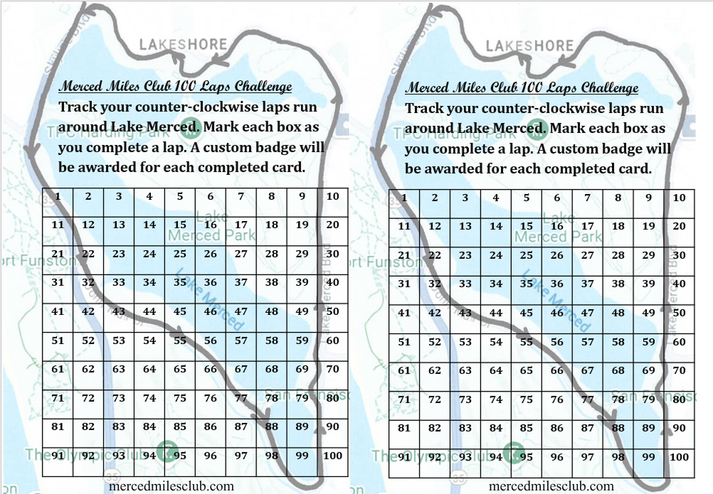
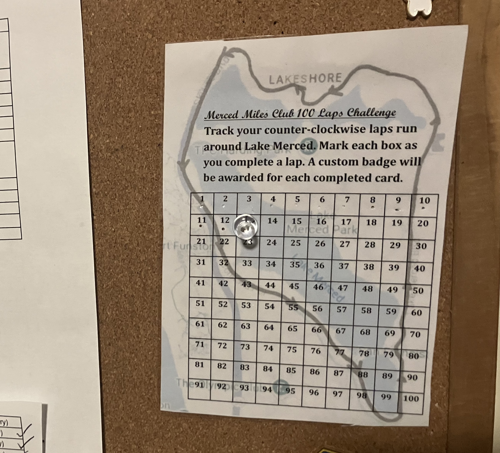

Welcome
Merced Miles Club is centered around running around Lake Merced in San Francisco in the counter-clockwise direction.
The club does not organize scheduled runs or events but informal runs with fellow members is not discouraged. Participation is informal and generally individual. Anyone may consider themselves part of the club.
The Loop
Lake Merced is approximately 4.5 miles around. A single lap consists of one counterclockwise loop around the scenic lake (no bridge shortcut).
Each completed 4.5 mile loop counts as one lap.
The 100 Laps Challenge
The 100 Laps Challenge is an optional long-term challenge associated with the club.
Completing 100 counter-clockwise laps around Lake Merced is roughly equivalent to running 460 miles over time.
The challenge may be completed at any pace and over any length of time.
Progress may be tracked using a 100 Laps Challenge Card.
The Card

The 100 Laps Challenge Card is a paper tracking card with space to record completed laps.
A printable version is available. A physical version may also be purchased.
The physical card is printed on high quality heavy weight laminate intended to hold up over extended use.
Purchasing a card is optional and does not affect participation. The physical card may be purchased here.
How to use the card
Each time a lap is completed around Lake Merced in the counter-clockwise direction, use the provided push pin to punch a hole in the corresponding lap number on the card.
When you have punched all 100 holes, you have completed the challenge! Once you submit your card the number of holes will be checked and you will receive a prize for your accomplishment as well as recognition on the Challenge Finishers page.
